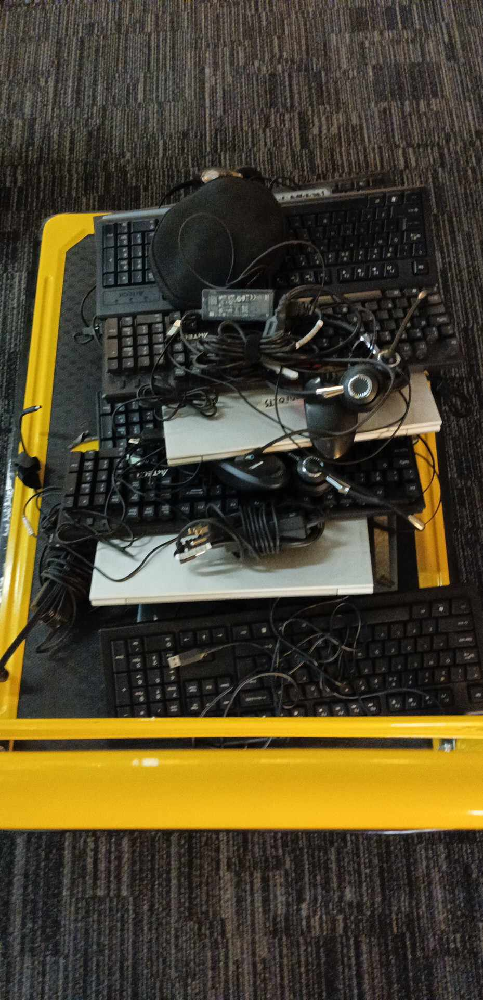
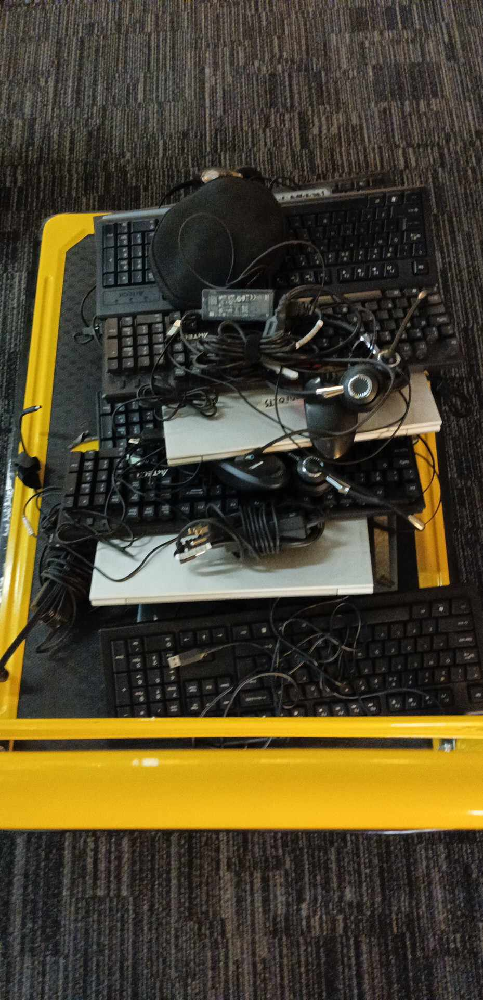

OJT Practicum
Main Page
I am Karl Dazzle G. Fango. I dreamed about to be a successful Entrepreneur in the IT industry. I possessed the skills of Multimedia, Front-end Developer, Leadership. I want to be surrounded by many Entrepreneurs and IT professionals, so that I can adopt their work of culture and to gain more of their experience about their field of expertise. My goal is to be a successful IT Company Owner and be an Investor to the small business who wants to start a small IT business. The company I dreamed of working for is Amazon Company so that I would get more exposed in a big company and learn into it so that can use it as my foundation to build my dream company. If I were hired in my dream company, I would like to be part of the IT team.
IT Profession
An IT profession encompasses various roles, such as digital architect, problem solver, innovator, and more. It involves tasks like building and maintaining digital infrastructure, solving complex challenges, and ensuring security. Courses are highly sought after due to their practicality, relevance to industry needs, and focus on emerging technologies.
. I chose to pursue a BSIT course to gain fundamental knowledge and establish a foundation in the IT industry. After completing this course, I aim to gain exposure to the IT industry. A good IT professional is technically skilled, adaptable, and communicates effectively. They stay updated with emerging technologies, excel in problem-solving, prioritize security, and collaborate well in teams. Continuous skill improvement and delivering high-quality solutions are central to their role.
On-the-Job Training Experience
An IT profession encompasses various roles, such as digital architect, problem solver, innovator, and more. It involves tasks like building and maintaining digital infrastructure, solving complex challenges, and ensuring security. Courses are highly sought after due to their practicality, relevance to industry needs, and focus on emerging technologies. I chose to pursue a BSIT course to gain fundamental knowledge and establish a foundation in the IT industry. After completing this course, I aim to gain exposure to the IT industry. A good IT professional is technically skilled, adaptable, and communicates effectively. They stay updated with emerging technologies, excel in problem-solving, prioritize security, and collaborate well in teams. Continuous skill improvement and delivering high-quality solutions are central to their role.The duties I encountered at Awesome CX as company’s Intern is to be a DesktopSupport, Auditor, Encoder, SysAdmin, CSS, TechSupport, Encoder.
{kind=link}
{kind=link}
{kind=link}
{kind=link}
{kind=link}
{kind=link}
The AWESOME CX Company is a customer-centric organization dedicated to delivering exceptional service and satisfaction. They prioritize innovation, excellence, and personalized solutions to optimize the customer journey. Through a skilled team and cutting-edge technology, they continuously improve and adapt to meet evolving customer needs and market trends, helping clients succeed in a competitive landscape.
On-the-job training (OJT) is essential in an IT course as it allows students to apply theoretical knowledge to real-world situations, develop technical skills, and gain exposure to industry tools and technologies. Additionally, OJT facilitates professional networking, enhances problem-solving abilities, cultivates soft skills, and boosts confidence for future career endeavors in the IT field.
. MY COMPETENCY SKILLS
• Technical support activities for technical support competency (attach picture/s and/or certificate as evidences with description on each).:
These are my performance during OJT
DesktopSupport
Encoder
Auditor
• Research competency activities (attach picture/s and/or certificate as evidences with description on each) any sample output of your work (COPSTONE PROJECT PICTURES) :
These photos shown below are capture After TITTLE, PROTOTYPE, FINAL DEFENSE
TITTLE DEFENSE
PROTOTYPE DEFENSE
FINAL DEFENSE
My OJT experience honed my resilience, teamwork, and adaptability.
My personality quality and how it applies to my OJT experiences at AWESOME CX as a Tech Support.
Being Responsible
During my OJT, I was entrusted with various tasks and responsibilities, such as handling customer inquiries, troubleshooting technical issues, and documenting solutions. I ensured timely resolution of customer issues and took ownership of my work to deliver high-quality service.
Having Self-Confidence
In my role as a Tech Support intern, I needed to confidently communicate with customers and provide solutions to their problems. I demonstrated self-assurance in my knowledge and abilities, which helped instill trust and credibility with customers.
Possessing Appropriate Social Skills
Interacting with customers and colleagues required effective communication and interpersonal skills. I listened actively to customers' concerns, conveyed technical information clearly and concisely, and collaborated effectively with team members to resolve issues.
Being Honest
Honesty was paramount in my interactions with customers and colleagues. I provided accurate information and acknowledged any limitations in my knowledge or ability to assist, ensuring transparency and trustworthiness in all communications.
Having Integrity
Integrity was essential in upholding the company's values and maintaining professionalism in my role. I consistently acted with honesty, sincerity, and ethical conduct, earning respect from both customers and colleagues.
Demonstrating Adaptability and Flexibility
The dynamic nature of IT support required me to adapt quickly to changing circumstances and technologies. I remained flexible in handling diverse customer inquiries and adjusting to new processes or procedures as needed.
Being a Team Player
Collaboration was key in resolving complex technical issues and achieving departmental goals. I actively contributed to team discussions, shared knowledge and insights, and supported colleagues to ensure collective success.
Being Punctual and Efficient
Timeliness and efficiency were crucial in meeting customer expectations and service level agreements. I prioritized tasks effectively, managed my time efficiently, and consistently met deadlines to deliver prompt and effective solutions.
Being Self-Directed
While receiving guidance from supervisors, I also took the initiative to independently research solutions, troubleshoot issues, and improve my skills. I demonstrated initiative and self-motivation in seeking opportunities for learning and growth.
Possessing a Positive Work Attitude
Maintaining a positive attitude was essential in navigating challenging situations and fostering a supportive work environment. I approached tasks with enthusiasm, remained resilient in the face of setbacks, and inspired positivity among team members.
Being Well-Groomed
While the focus of my role was primarily on technical support, presenting a professional appearance was still important in representing the company positively to customers. I ensured that I dressed appropriately and maintained a neat and tidy appearance during interactions with customers.
Being Cooperative
Collaboration and cooperation were essential in achieving shared goals and delivering exceptional customer service. I actively participated in team meetings, contributed ideas, and collaborated with colleagues to address customer needs effectively.
Being Self-Motivated
In a fast-paced environment, self-motivation was key to staying focused and productive. I set personal goals, sought out opportunities for improvement, and consistently strived to exceed expectations in my role.
Demonstrating Good Time Management
Effective time management was critical in juggling multiple tasks and priorities. I utilized organizational tools, such as calendars and task lists, to prioritize tasks, allocate time efficiently, and ensure timely completion of assignments.Through my OJT experiences at AWESOME CX as a Tech Support intern, I have applied and developed these personality qualities by actively engaging in various tasks, learning from feedback, and reflecting on my experiences to continuously improve. Each situation or scenario presented an opportunity to demonstrate and refine these qualities, ultimately contributing to my professional growth and readiness for future endeavors in the IT field.
Thinking Skills
Through my internship at AWESOME CX as a Tech Support intern, I applied and developed competencies relevant to a BSIT course, including responsibility, self-confidence, social skills, honesty, integrity, adaptability, teamwork, punctuality, efficiency, self-direction, positive attitude, and problem-solving. These experiences involved learning, creative thinking, decision making, and problem-solving in real-world scenarios, contributing to my professional growth and readiness for the IT field.
Work Experience
What do you do daily in the OJT establishment? How does it help in improving your skills in your course?
Engaging in tech support and monitoring during the graveyard shift, followed by auditing and asset tagging in the morning shift, provides practical application of theoretical knowledge from my BSIT course. These experiences enhance technical skills, problem-solving abilities, time management, attention to detail, and documentation skills. Overall, they contribute to a well-rounded skill set essential for success in the IT field.
Describe scenarios/situations and problems encountered during your work and how you handle them?
Encountering a duplicated IP address issue with Unit1 led to efforts to identify and rectify the problem. Despite instructions from the Senior IT, the duplicate IP address couldn't be found. Instead, the team discovered more units with duplicated IP addresses, indicating a broader network issue. This experience underscored the complexity of network management and the importance of proactive measures to prevent such conflicts in the future. It highlighted the need for thorough network documentation, diligent troubleshooting, and effective collaboration within the IT team.
Discuss your overall observation and professional relations with co-OJTs, employees, and supervisors in the company.
My professional experience at AWESOME CX has been characterized by positive and collaborative relationships with co-OJTs, employees, and supervisors. Interactions with fellow interns have been supportive, while engagement with employees has provided valuable insights into company culture and industry practices. Supervisors have offered clear guidance and mentorship, fostering my learning and growth. Overall, these relationships have contributed to a positive and enriching internship experience.Pictures of you on the job
 
